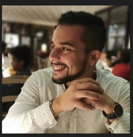

Curriculum di Simone

Sommario
Sono una persona a cui piacciono le sfide, lavorare in team e avere sempre un obbiettivo d'avanti a me da raggiungere.
Istruzione
- Diplomato nel 2009 alla Scuola Superiore "G.Rosati"di Foggia come "Ragioniere Programmatore" con il voto finale di 70/100
Esperienza Lavorativa
Militare presso il Ministero della Difesa
Marzo 2011- a tutt'oggi
- Addetto al centralino
- Tecnico Elettrogenista
- Conduttore di mezzi vari
- Addetto al controllo e alla gestione del personale
Animatore turistico presso
"Centro vacanze Oriente"
Maggio2010-Setembre 2010
- Addetto al contatto con i turisti
- Addetto all'organizzazione dei tornei
- Ballo, Canto e recitazione
Addetto alla sala presso Ristorante Pizzeria "Pino Giorgio"
Luglio 2009-Maggio 2010
- Sistemazione sala
- Addetto agli ordini
- Adetto alla cassa
- Inventario pre e post serata
Abilita'
- Ottima propensione al lavoro in team
- Ottimo spirito di adattamento
- Ottima capacità di problem resolving
- Ottima conoscenza della lingua Spagnola
- Buona conoscenza della lingua Inglese
- Buona conoscenza del pacchetto Office
Premi e Certificazioni
- Encomio semplice (Marzo-2017)
- Elogio missione di pace
Iraq (Agosto2020-Febbraio2021)
- Elogi Srade Sicure (Bologna,Bescia,Rimini)
Altro